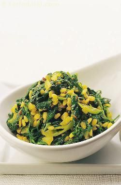

A very easy recipe combining iron-rich fenugreek leaves and protein-rich green gram dal, the smell of methi moong dal subzi bubbling on the stove will draw your family to the table!

Ingredients
1/4 cup yellow moong dal (split yellow gram) , soaked in hot for 5 minutes
2 cups chopped fenugreek (methi) leaves
1/2 tsp cumin seeds (jeera)
1 small onion , chopped
2 garlic cloves , grated
2 green chillies , chopped
1/4 tsp turmeric powder
1 tsp besan (bengal gram flour)
2 tsp oil
salt to taste
Method
Heat the oil and add the cumin seeds. When they crackle, add the onion, garlic, green chillies and saute for 1 minute.
Add the turmeric powder, fenugreek and salt and stir.
Add the soaked moong dal and 1/2 cup of hot water.
Sprinkle the besan, mix well and bring to a boil. Simmer for some time.